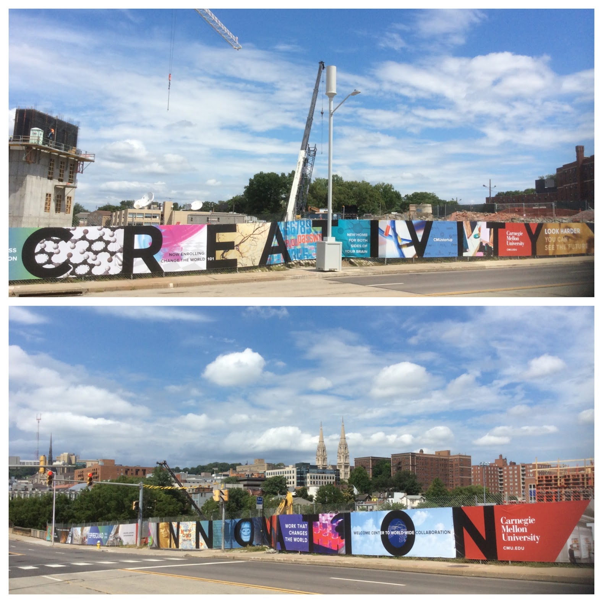
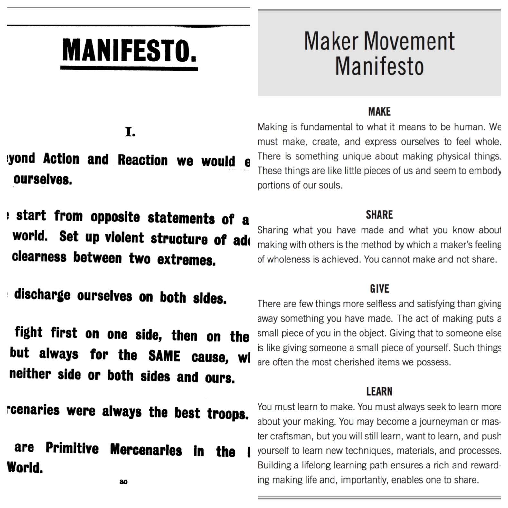
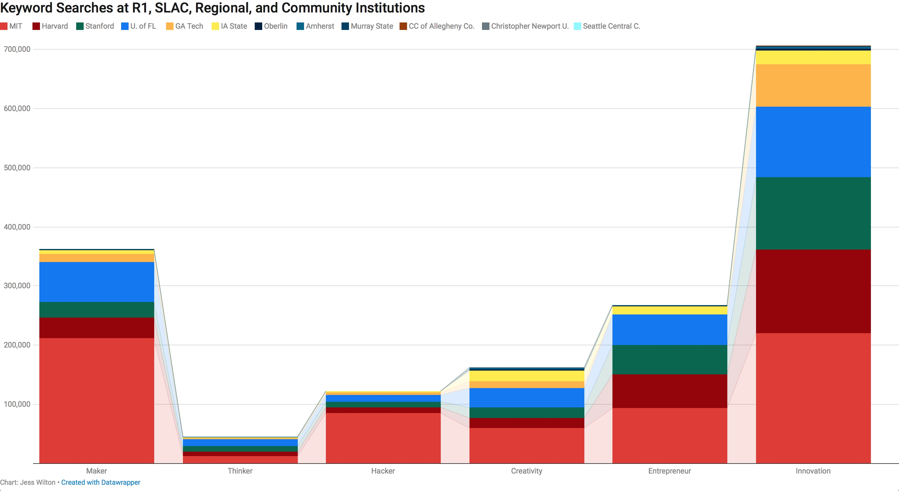
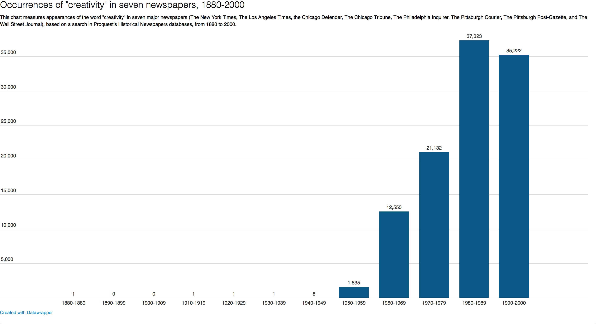

New Modernism and Utopian Creativity
Jess Wilton
University of California, Santa Barbara
(Published September 16, 2019)
Introduction: creativity, innovation, and new modernism

Figure 1. Creativity and innovation-themed banners line a construction site at Carnegie Mellon University in August 2016.
I took the photographs above in the summer of 2016 on the campus of Carnegie Mellon University, where the foregrounded banners decorated a massive construction site for a new “quadrangle” that would house the School of Business. They invoke the dramatic effects of creativity and innovation in the twenty-first century, the promise of the new amidst Schumpeterian ‘creative destruction.’ ‘Creativity’ and ‘innovation’ represent a wide range of entrepreneurial trends in higher education and industry that humanities scholars typically associate with postmodern ephemerality, such as planned obsolescence and fluctuating interest rates. The photos are also aesthetically postmodern and representative of postmodernity in their tendencies toward surface over depth, present over past, and gesture over meaningful intervention. Despite such associations, this article argues that since the 1970s, a widespread embrace of creativity and innovation in American culture (which this image embodies) borrows heavily from the utopian and collective experiments of late nineteenth- and early twentieth-century modernism. The new modernism I will delineate here is industrial and economic as well as cultural and aesthetic, and is as prevalent in sectors like technology and higher education as it is in arts and performance. New modernism draws inspiration from the collective spaces of the modernist design workshop and literary salon, and in its calls for collectivity and the synthesis of theory and practice, it evokes utopian impulses that many scholars have mourned as part of postmodernism’s ostensible replacement of modernism.
Terry Eagleton’s 1985 essay “Capitalism, Modernism, and Postmodernism” is exemplary of such laments. Eagleton cites Fredric Jameson’s assertion that postmodernism replaces parody with pastiche, and suggests instead that “what is parodied in postmodern culture, with its dissolution of art into the prevailing forms of commodity production is nothing less than the art of the revolutionary avant-garde” (60). In other words, postmodernism mocks the utopian modernist impulse to “dismantle the institutional autonomy of art” by erasing its political and social impulses and embracing its commodification (61). While Eagleton’s assessment makes sense in the context of the 1980s, when consumer capitalism was still dominant, post-millennial capitalism has more to do with social and productive technologies (the web, smartphones, 3D printers, etc.) that complicate the one-way dynamics of consumerism and enable forms of production-as-consumption, such as working in a maker space or blogging. These trends might legitimately revive the utopian impulse of twentieth-century avant-gardes, or merely evoke nostalgia for such utopianism, commodify it more convincingly, and accelerate inequality. Modernism and utopianism are not synonymous, either in the historical period of modernism in the 1910s, 20s, and 30s or in the period since 1970 when the new modernism I describe has been ascendant. However, a “utopian desire for a fusion of art and social praxis” (as Eagleton puts it) connects these two iterations of modernism across a century of history (61).
The idea of a radical break between modernism and postmodernism has already been thoroughly disputed, but I hope to add to that discussion by demonstrating a social and economic resurgence of modernism that has taken hold in recent celebrations of creativity and innovation. On one hand, this new modernism adapts the grassroots and collective impulses of modernist production embodied in the design workshops, small presses, and artists’ collectives of early twentieth-century avant-gardes. On the other hand, the new modernism reifies both the products and the practices of its predecessors, in the form of maker space memberships and college hackathons (for instance), in which participants in the new modernism purchase their exploitation in the name of creativity. Furthermore, contemporary deployments of creativity and innovation favor the future over the past, invention over reason, and destruction over tradition. This kind of avant-garde futurism was anti-institutional in the modernist practices of the early twentieth century, but its new incarnation is institutionally entrenched. The modernist tendency to destroy and create anew is no longer directed against powerful institutions and corporations; rather, it is integral to elite universities, major corporations, and government policies. This does not necessarily mean that one should dismiss this new modernism as so much co-opted pseudo-radicalism, however. If any of its explosive capacity remains, its residence in the halls of power might render it all the more potent.
The new modernism I describe here is closely tied to neoliberalism, so a significant portion of my argument will illustrate examples of decentralization, contingency, and self-exploitation that look to modernist sources for inspiration. Before doing so, however, I will provide a few examples from Arts-and-Crafts and modernist projects that embodied the utopian spirit I describe above. I will then describe three core elements of the new modernism that have been especially influential in twenty-first-century industry and higher education: makerism, institutionalized modernism, and minimalist selective itinerancy. In order to show how modernist practices regained their relevance, I will conclude with a brief history of the rise of creativity in the late twentieth century. Ultimately, I hope that sharpening the contours of the trends I describe here will allow the exploitative and radically transformative elements of the new modernism to be more effectively parsed, in both academic and public discourse.
Modernism and Utopian Practice
Modernist modes of production are attractive now for similar reasons to those that appealed to avant-garde writers and artists in the early decades of the twentieth century. In their attempts to circumnavigate both mass culture and the rigid traditions of Victorian institutions, modernists and their immediate predecessors in the Arts and Crafts movement created spaces and networks that allowed them to support one another and operate independently, so that they could develop experimental aesthetics and find an audience for their work. Like maker spaces today, these places and practices offered both the appearance of disalienation as well as legitimate transformative potential. The paradigmatic modernist enterprise of the little magazine, for instance, created intimacy between authors and readers, as small groups of modernists produced work for each other. Yet this intimacy was dampened by competition for cultural capital and the exclusiveness of modernist networks and aesthetics.
By disalienation, I mean the resolution of Marxian alienation from oneself, others, and the products of one’s labor, but the term also operates here in a more colloquial manner, as the antidote to the fatigue and disconnection that accompanied early twentieth-century modernity and its accelerations of cultural production, military violence, global communication, and transportation. Disalienation is merely apparent in the production practices of modernist artists because their utopian projects were only semi-autonomous from cultural industries such as Hollywood, Broadway, and Madison Avenue. Not only did they often critique and parody these institutions and industries; many modernists were also financially dependent on them. Such dependence does not erase the transformative potential of modernist modes of production, however. In their small enterprises, networks, and autonomous collectives, they modeled modes of utopian collectivity and alternative production that aimed for large-scale social and economic transformation.
The work of William Morris provides a proto-modernist example of such utopian collectivity. A socialist thinker, Romantic poet, science-fiction novelist, and entrepreneur, Morris saw the potential for a utopian socialist society in which all activity contained an element of artistry, and the whole of the built environment could be beautiful. His Arts-and-Crafts philosophy and independent cultural enterprises in the late nineteenth century inspired many twentieth-century modernists. Morris’ utopianism was theoretical, as expressed in his lectures and in works of utopian fiction like News from Nowhere (1890), and also practical, as realized in the implementation of his design and textile business Morris and Company. Morris and Co.’s Merton Abbey workshop, for instance, was designed to provide workers with a pleasurable environment and demonstrate an alternative to the dismal and degrading factory floors of industrial capitalism. As Morris’ biographer recalls, “the long low buildings with the clear rushing little stream running between them, and the wooden outside staircases leading to their upper story, have nothing about them to suggest the modern factory” (qtd. in Boris 9). The natural setting and practical, yet pleasant interior reflect Morris’ advocacy of humble work in accordance with organic principles of life and form. Morris sought to redeem both art and labor through egalitarian policies on the shop floor, as Morris scholar Eileen Boris’ work on the “craftsman ideal” recounts. Morris insisted on learning trade skills himself and hiring “unskilled enthusiasts” such as “boys from a nearby orphanage” and “relatives (mostly women) of friends and workers” (Boris 9). Utopian business practice, in this case, meant the transformation not only of an industry, but also the social structures beyond.
Such an attempt to disalienate workers in the present suggests that Morris’ utopianism was more modernist than Marxist, in its presumption that disalienation can occur through anti-establishment, autonomous creative practice rather than full-fledged revolution. Marx expected alienated labor to provoke revolution, after which the conditions for unalienated labor can arise, but Morris’ view is open to reordering these steps. Peter Smith’s introduction to William Morris in the Twenty-first Century (2010) identifies Morris’ contemporary relevance in “the struggle to address the false dichotomies of the practical and the aesthetic, the utilitarian and the poetic, the brute facticity of the real versus the capricious idealism of the dilettante” (136). His emphasis on the unification of theory and practice was influential in both the modernism that immediately followed Morris’ Arts and Crafts movement as well as the new post-millennial modernism.
Modernists drew from Morris’ philosophy to create utopian-entrepreneurial environments for collective production. These modernist spaces, however, were more cooperative and communitarian than the entrepreneurial, technology-oriented maker spaces that have emerged recently alongside demands for creativity and innovation. For instance, Roger Fry, an English modernist art critic affiliated with the Bloomsbury circle, opened an interior design studio called The Omega Workshops in London’s Fitzroy Square in 1912. Its dual purpose was to counteract aesthetic stagnation in English interior design and to provide supplementary income for avant-garde Bloomsbury painters (Anscombe 31-32). Virginia Woolf’s biography of Fry cites one journalist’s account of the workshop: “a great white work-room, where one artist was at work on a ceiling, [and] another was painting what appeared to be ‘a very large raccoon with very flexible joints’ for the walls of a nursery” (195). Edward Wolfe, the “last artist to join the Omega,” found it to be “an extremely colourful and creatively exciting place, with an atmosphere that encouraged the artist to pick up and decorate whatever came to hand. The keynote of the Workshops was spontaneity” (qtd. in Anscombe 36). Like many contemporary maker spaces, the Omega’s interior fostered a utopian spirit of artistic freedom.
Omega was also characteristic of modernist enterprises in its attempt to lift others’ fortunes, just as Sylvia Beach’s publishing and retail enterprise Shakespeare and Co. worked to publish such difficult-to-market works as James Joyce’s Ulysses, and modernist little magazines, from the Little Review to the Dial published the work of writers within the editor’s modernist network. While these projects were fundamentally commercial, they also brought together artists whose shared interests included economic and racial justice, aesthetic independence, and other ideals conducive to political resistance. Such tendencies would be more pronounced in modernist formations of the 1930s like the Federal Theater Project, which generated radically progressive productions like Orson Welles’ all-black Macbeth and the anti-capitalist musical Cradle Will Rock. These attempts to evoke utopian socialism in the present were redirected toward anti-fascism during the 1930s and virtually disappeared during the Cold War. In the new modernism based on fabrication and coding, however, utopian impulses have reappeared.
Makerism as Institutional Modernism
The accepted history of modernism states that during the decades following World War II, as the work of modernist writers became canonical in the teaching of American literature, its radical utopian spirit was co-opted by consumer capitalism. For instance, the cultural critic M. Keith Booker argues in The Post-Utopian Imagination: American Culture in the Long 1950s (2002) that “a number of products of American culture in the long 1950s demonstrate the decline of the American utopian imagination in the years after World War II” (3). Booker associates this decline with postmodernism, which suggests that the decline of utopianism parallels the decline of modernism and the triumph of consumerism (4). Consumerism, in turn, is one piece of the hegemonic Fordist economic regime of this particular period, which was characterized by hierarchical organization, corporate growth, worker protections, manufacturing, and efficiency (Harvey 125). While Fordism offered stability and consistency, however, it was perceived as stifling creativity and provoking conformity, in the intensified division of labor in the mid-century firm as well as the formation of homogenous consumer-based identities. Resistance arose quickly, however, as the germs of making, hacking, gigging, and corporate creativity appeared in the 1960s, almost as soon as Fordism achieved dominance. These four trends have always been both resistant and consumerist, but in their twenty-first-century iterations, they have been fully integrated into dominant economic systems. The realization of anti-Fordist ideals like flexibility, mobility, and spontaneity has created the impression of having eradicated the hierarchy and conformity of Fordism and brought about a capitalist utopia. Although the modernism expressed here is unabashedly neoliberal, however, it might also be leveraged toward something more truly transformative.
The DIY movement, for instance, has long been characterized by a radical egalitarianism that associates craftsmanship with diversity, empowerment, and democratization. Rebekah Willett’s brief history of the maker movement in a Library Quarterly article on makerspace discourse traces the current wave of library makerspaces back to the Arts and Crafts movement in the late nineteenth century, through the home improvement movement of the mid-twentieth century (itself both a rejection and embrace of consumerism), to the appearances of punk rock and zines in the 1970s, hackers in the 1980s, and finally bloggers, podcasters, digital music producers, and other self-publishers in the twenty-first century (Willett 314-315). What unites many of these trends, according to Willett, is a “strong emphasis” on “activism and action” (316). Willett differentiates the “DIY ethic” from the maker movement, and argues that “the history of making, hacking, and DIY cultures is politically charged and concerned with the democratization of production processes (as opposed to industrialized production processes),” but the contemporary maker movement lacks such an ethic (316).
Statistical reports from that movement’s flagship event, the San Francisco Bay Maker Faire, for instance, demonstrate its lack of diversity. Attendee studies of maker faire participants show them to be overwhelmingly white, male, and affluent, and note that they “tend to be male, home owners, and married with children; their median age is 42” (“Attendee Study”). This is at odds with the Maker Faire website’s declaration that “people of all ages and backgrounds gather to share, make, and get inspired at Maker Faires around the world” (makermedia.com) The critique of the maker movement’s lack of diversity is prevalent among critics. Granted, problems of exclusivity were prevalent in modernism, punk, and especially hacker culture. But persistent criticism of the maker movement’s demographics suggests that diversity is essential to this kind of project and that there is an abiding sense that the point of the “DIY ethic” (which hearkens back to Morris) is to transform the world beyond the workshop, more than to accomplish the enrichment of the individual.
One reason for this individualistic turn is the rise of what I call “makerism,” which I differentiate from DIY and the “maker movement” in its tendency to emphasize the utopian gesture over active democratization. Makerism has taken hold in universities, corporations, and communities, as 3D printers and laser cutters appear in libraries and corporations clear out cubicles to make way for the modernist open workspace. I add the “ism” to represent its dogmatism and differentiate “makerism” from more genuinely transformative maker initiatives. The “ism” also highlights tendencies to favor building and tinkering over reading, writing, and thinking, and to promote the self-actualization of the individual instead of the mobilization of a radical and diverse community. One way this has been accomplished is through the synthesis of modernism and neoliberalism, which is evident in many contemporary maker situations, but perhaps most visible in the consumer maker space.
In the TechShop chain of maker spaces, for instance, the modernist transformation of theory into practice is reinvented as the synthesis of production and consumption. Put differently, TechShop is the consumer version of the utopian modernist workshop. Mark Hatch, owner of the maker-space chain, lays out the principles of makerism in The Maker Movement Manifesto (2013), in which he commands the reader to “MAKE. Making is fundamental to what it means to be human. We must make, create, and express ourselves to feel whole. There is something unique about making physical things. These things are like little pieces of us and seem to embody portions of our souls” (1). His tenets of the maker movement—“Make,” “Share,” “Give,” “Learn,” “Tool Up,” “Play,” “Participate,” Support,” and “Change”—invoke modernist collectivism. In this case, however, the consumer and producer are the same, as one must consume a membership in order to produce. Furthermore, there is an odd contrast between his use of the collective pronoun and his emphasis on self-fulfillment. “We” self-actualize through making, but it is not truly a collective endeavor, and certainly not political.
Hatch’s paradoxical utopianism is also evident in his use of the manifesto, a quintessentially modernist genre. His “Maker Manifesto” is a 224-page marketing document, arranged in the form of the avant-garde manifesto. In the early decades of the twentieth century, avant-garde artists frequently declared their revolutionary intentions via manifesto, and the results included manifestos of Dadaism, Surrealism, Vorticism, Futurism, Cubism, Imagism, Expressionism, and Constructivism. As Vasiliki Kolokotroni, Jane Goldman, and Olga Taxidou observe, these manifestos offered “a sense of the modern as intervening and transformative in an international and revolutionary climate shaped by cataclysmic war and massive political and social upheaval” (xix). Hatch’s Manifesto is less dramatically revolutionary, as it channels modernist aesthetics into a colorful paperback, which in its graphic design resembles such classically modernist texts as Wyndham Lewis’ Vorticist Manifesto (1914)—itself once associated with Lewis’ short-lived maker space, The Rebel Arts Centre (see figure 2). Whereas the bold lettering, excessive punctuation, and dramatic arrangements of Lewis’ document were both an imitation and parody of print advertising, Hatch’s use of the same visual devices is an imitation and parody of Lewis’ parody. The Maker Manifesto thus represents much more than a simple co-optation of a revolutionary genre. If manifestos like Lewis’ embody the modernist tendency toward self-reflexivity, Hatch’s re-appropriation of the genre returns to sincerity and dogmatism, and the world of making he describes is a neoliberal utopia.

Figure 2. Left, “Manifesto” from Blast 1, ed. Wyndham Lewis, 1914; Right, from The Maker Movement Manifesto, Mark Hatch, 2013.
To participate in Hatch’s revolution, one must embrace the self-exploitation that is characteristic of neoliberal instability. Each directive in the Maker Manifesto is accompanied by examples from the lives of real twenty-first-century makers who repeatedly sacrifice stability and consistent employment for the sake of making. One TechShop member he describes has taken an “extended ‘maker vacation’,” for instance (22). This man, Hatch recounts, “had saved up his money for a couple of years working odd jobs as a security guard and janitor, and once he had accrued enough money, he quit his job” to commit to making full time. This endeavor entailed some remarkable moments of contingency: “To stretch his funds,” Hatch writes, “he didn’t stay at a hotel or rent an apartment. Instead, he used couchsurfing.org to find free places to stay every night. A few times, he couldn’t find a couch, so he just slept in his car” (22). Rather than lamenting the dangers of such self-inflicted forms of itinerancy, however, Hatch celebrates the man’s ingenuity, as well as his value as a TechShop recruiter:
Couch surfing turned out to be a great tool for him to help us find new members. He was so focused and excited that he would go “home” at night and tell his new couch surfing host all about what he was doing at the shop. We picked up half a dozen or so new members that month. We actually kicked around the idea of turning him into a sales representative by having him couch surf through the Bay Area for a couple of months. (14)
In short, the anecdote celebrates ideas of bohemian itinerancy while simultaneously evading the deterioration of stable jobs for working-class people and the extreme inequality of the Bay area, to which this story of a sporadically employed service worker’s transformation into an itinerant maker alludes.
Similarly, makerism celebrates the fall of corporate conformity alongside the demise of labor solidarity. In his rejection of corporate management culture and Fordist institutionalism, Hatch rejects, trivializes, and trolls the labor movement. Another of Hatch’s makers, for instance, embodies the deterioration of worker protections amidst the rise of self-enterprise. According to Hatch, Tina Albin-Lax “made a New Year’s resolution” in 2012 to “make something” (13). She took a $60 laser-cutter class at TechShop, made a batch of cupcake toppers for her nephew’s birthday party, launched an Etsy store, got noticed by Martha Stewart, and is now a triumphant entrepreneur. Albin-Lax’s success, Hatch muses, “all came about from a simple desire to make something for the first time since sixth grade. An accidental entrepreneur was born. And what was Tina’s background? She was a labor organizer” (Hatch 14).
Why does Hatch mention this? If one cannot fault Hatch for his enthusiasm about his own enterprise, it at least worth asking why he feels the need to mention Albin-Lax’s past as an advocate for workers’ rights. It suggests that he is aware that making is an instrument of neoliberal contingency, and relishes its attack on institutions that preserve worker protections. Throughout the Manifesto, Hatch is an enthusiastic proponent of such quintessentially post-Fordist trends as elective itinerancy, independent enterprise, decentralized production, and uncalculated risk-taking. He promotes his tenet of “play,” for instance, with an anecdote from his U.S. Special Forces career. In it, he and other servicemen decide “to cut down a tree… with a detonation cord (det-cord) and plastic explosive” (26). Hatch describes their plans and execution thereof and recalls “That was a great day, or, it was until we started a small fire. Live and learn. No, actually, play and learn” (27). There may be little harm in such “play,” and Hatch’s experimentation certainly embraces the avant-garde spirit, even if it incurs unnecessary damage.
Makerists, in other words, reject traditional notions of labor organization and celebrate a spirit of capricious anarchy, much in the way that modernist artists did. There are a few crucial differences between makerism and modernism, however. The former focuses on individual satisfaction over collective benefit, as mentioned earlier. Modernism itself certainly grappled with this tendency as well, but the mantra of art-for-art’s-sake never truly referred to creation as an end in itself, nor was it truly a modernist invention—it comes from Aestheticism, wherein it was typically used ironically. Second, makerism occurs within institutions and corporations, while previous iterations of utopian DIY practice were deliberately staged outside of and against these entities. As a result, makerism is a philosophy that is removed from everyday life, in contrast to the modernist desire to unite art and the ordinary. Third, and closely related to the second difference, makerism is utopian in gesture but not in practice, because the committed utopian imagination seeks to envision something beyond extant structures, rather than contributing to the maintenance of them.
Institutional Modernism
Of all the industrial and institutional endorsements of makerism, higher education’s is perhaps the strongest, as the images that precede this article suggest. Unlike the artistic and literary character of former avant-gardes, however, makerist implementations of creativity, idea generation, and imagination in higher education are usually limited to Science, Technology, Math, and Engineering (STEM) contexts. In contrast to the grassroots spirit of the more democratic modernisms, maker spaces in higher education are the province of elite institutions. Although most four-year institutions in the U.S. now have some sort of maker space or plans to initiate one, the most maker-oriented campuses are those of the elite technical institutes and ivy league universities that constitute the Higher Education Makerspaces Initiative (HEMI): U.C. Berkeley, Carnegie Mellon, Case Western, Georgia Tech, MIT, Olin College of Engineering, Stanford, and Yale.
The discourse of university makerspaces tends to be based in action and practice and is often devoid of self-reflection. Whereas modernist collective movements tended to generate a consistently self-reflexive aesthetic, maker spaces are generally lacking in mission or philosophy, so the participant can (in theory) make anything she wants, without shared philosophical or aesthetic principles. Carnegie Mellon’s “IDeATe,” (Integrative Arts, Technology, and Design Network) program, for instance, does not identify as a program but rather as a “network.” IDeATe has no mission statement listed on its web page beyond that it “connects diverse strengths across CMU to advance education, research and creative practice in domains that merge technology and arts expertise” (“Integrated”). The mission statement of MIT’s MakerWorkshop emphasizes, like many of these initiatives, equipment and activities over purpose. The site states: “The mission of the MIT MakerWorkshop is to foster a student community in a hands-on learning environment where modeling, prototyping, and validation resources coexist. MIT MakerWorkshop provides space and equipment for a community of innovators that focus on deterministic designing and problem solving” (“MIT MakerWorkshop”). Georgia Tech’s Invention Studio similarly aims to “create environments for students to make their ideas a reality by providing resources for designing, prototyping, and sharing ideas through workshops, vendor networks, experienced guidance, and access to cutting-edge machines” (“Invention Studio”). This emphasis on technology, fabrication, and production is characteristic of the maker movement as a whole.
Although the university might appear to be an ideal space in which to ask why and how we make, undergraduates in top-tier research universities are increasingly encouraged to favor production over reflection (see figure 3). A search of twelve college and university websites in 2018, for instance, generates an (admittedly non-scientific) image of the verbal emphasis on making over thinking. Collective results from twelve schools that ranged from R1 universities to small liberal arts colleges, regional institutions, and community colleges reveal informative trends. The word “maker” appears about eight times for every mention of a “thinker,” while “hacker” (notwithstanding its appearance as a surname), “creativity,” and “entrepreneur” are all on the rise, and “innovation” is ubiquitous. Hackathons, in particular, have become a popular trend in recent years. They are essentially extended, collaborative work sessions during which teams of students sacrifice sleep and nutrition in order to bring an idea to fruition. The end result might be anything from a business plan to a product prototype, or even a song. The events are competitive and fundamentally entrepreneurial, but also are designed to foster learning and inclusivity. One hackathon, for instance, is described as “an opportunity for hackers to get together to build or modify software to create something that is useful, interesting or just cool… even if each participant may not know how to do so at the outset” (Spice, “Students”). Such inclusiveness, however, has the added consequence of deepening the free labor pool for the corporate sponsors who often retain rights to the innovations produced at these events.

Figure 3. Action vs. Contemplation in Higher Education Today. From https://datawrapper.dwcdn.net/WYHmj/3/.
Much like TechShop encourages entrepreneurship and rejects traditional, stable labor models, hackathons redirect students from the acquisition and production of knowledge toward corporate activities like prototyping and disrupting. Hackathons, in other words, are part of a more widespread “entrepreneurship racket” that Avery Wiscomb identifies as a troublesome new mutation in the corporatization of higher education: “on the face of it,” Wiscomb argues, “experiential learning opportunities championed by entrepreneurial programs—and indeed much of the entrepreneurial agenda—seem not only practical but also beneficial to students who want to work in these industries. But these experiences are necessarily more beneficial to science and tech companies than to students” (Wiscomb). The problem of student exploitation is compounded by the rapid and anarchical spirit of such events, in which hacking often occurs for its own sake. As Sarah Brouillette argues, “even as universities praise results that lead to saleable intellectual properties or have economically instrumental applications, they show little interest in evaluating the social ramifications of a given innovation” (“Academic”). Some outcomes of such collaborations speak to the contrary, such as an Android app designed to read texts to the deaf in India that was developed in collaboration with the startup Hear to Read (Spice). To identify the transformative potential of a hackathon project, however, traditional academic practices of reflection and interpretation may be beneficial, even as they slow the pace of hacking.
What is remarkable about the types of modernism that have reappeared in retail makerspaces and university hackathons is their modified institutional status. After all, this is not the first-time modernism has been institutionalized. After World War II, modernist literature became canonical across U.S. English departments, as various formalist pedagogies were implemented in the name of democratizing the processes of interpretation. From the 1950s to the 1980s, institutional modernism meant doing New Critical readings of The Wasteland. In 2018, it means designing apps that keep babies warm in developing countries. The stakes here do not lie in casting either form—or their less institutional predecessors—as morally superior or inferior. Instead, the juxtaposition of all of these modernisms might serve as a reminder that people in English departments have important things to add to the evolution of programs that champion creativity and innovation, within and beyond higher education.
Disorganized labor and selective itinerancy
A post-Fordist corporation is most successful if it is geographically and structurally decentralized, and if its labor force is minimal, allowing for maximum flexibility in rapidly fluctuating markets. Central to these strategies are neoliberal values of flexibility and mobility, and reliance on contingent labor. New modernist elements appear in these contexts as well, particularly in the sector that has come to be known as the “gig economy” and in new lifestyle trends like itinerancy and minimalism. In other words, the modernist artist’s lifestyle of personal creativity and supplemental income has been idealized in the millennial economy. Mobility and precarity were preconditions of modernist production, particularly for American modernists in the 1920s and 1930s. Full-time, permanent attachment to a cultural industry obstructed modernist aesthetic autonomy, so the model for modernist employment was cast by writers like Sherwood Anderson, who abruptly abandoned his advertising career and family to write avant-garde novels in Chicago. Sporadic employment as contractors for film, theater, and news industries allowed many American modernists to live as European expatriates for extended periods, which ostensibly afforded them intellectual autonomy from their native land and its mass culture. Similarly, gig work and minimalist itinerancy offer twenty-first-century laborers alternatives to traditional industries, an oft-derided practice in the literature of these movements. Stability and rootedness are often presented as symptoms of alienated labor, as new forms of contingency relieve workers of the confines of permanent employment.
The gig economy is part of a more widespread transformation in capitalism since 2008 that Nick Srnicek has defined as “platform capitalism.” In his recent evaluation of the post-2008 economy, he argues:
The new business model that eventually emerged is a powerful new type of firm: the platform. Often arising out of internal needs to handle data, platforms became an efficient way to monopolise, extract, analyse, and use the increasingly large amounts of data that were being recorded. Now this model has come to expand across the economy, as numerous companies incorporate platforms: powerful technology companies (Google, Facebook, and Amazon), dynamic start-ups (Uber, Airbnb), [and] industrial leaders (GE, Siemens). (57)
Although Srnicek (like many academic critics of neoliberalism and its various iterations and consequences, including me) is critical of the ways in which this system seems to fool workers into self-exploitation, popular accounts are more mixed in their assessment. Tech journalist Rana Foohar, for instance, argues that “the platform technologies of the ‘sharing economy’ might offer the possibility of empowering labor in a new way, creating a more inclusive and sustainable capitalism” (Foohar).
Some popular journalists are critical of platform capitalism. Sarah Kessler’s Fast Company article “Pixel & Dimed: on (Not) Getting By in the Gig Economy” notes “troubling issues about what it means to be an employee today and what rights a worker, even on an assignment-by-assignment basis, are entitled to.” Furthermore, she notes:
One of the cruel ironies of the gig economy is that even though it’s geared almost exclusively to serve urban markets, the kind of densely packed cities where space is at a premium, one needs a car to have a shot at the cream of the work that’s available. Even worse, the universe of gig economy startups is mostly relying on young people and others who are underemployed–exactly the people whom are least likely to be able to afford a car in a city. Or have an extra bedroom. Or a parking space. Or designer clothes. Or handyman skills. (Kessler)
The gig economy appears to make workers freer by allowing them greater flexibility, but falls short in practice. It also appears to resolve Fordist alienation, as transactions occur in an apparently simplified manner that places the producer and consumer in direct contact. The extended Fordist production chain in which a commodity or service is processed through numerous levels of production, distribution, marketing, and consumption appears to have been pared down to a few simple steps. In some views, these activities appear to have the capacity to empower and liberate individuals from the drudgery of stable employment, and could in some views even revolutionize capitalism itself. As an agent of disalienation, gig work is insufficient, as its elimination of labor hierarchies is illusory. There is a difference between owning the means of production and those of distribution, so gig workers might own couches and cars, but they are unlikely to seize the platforms themselves.
Paul Mason’s Postcapitalism: A Guide to Our Future, however, offers a more traditionally utopian vision in which individuals might escape from—and potentially overthrow—neoliberal capitalism. He argues that the gig economy
…offers an escape route—but only if these micro-level projects are nurtured, promoted, and protected by a massive change in what governments do. This must in turn be driven by a change in our thinking about technology, ownership, and the work itself. When we create the elements of the new system we should be able to say to ourselves and others: this is no longer my survival mechanism, my bolt-hole from the neoliberal world, this is a new way of living in the process of formation. (xv)
Mason’s argument for the revolutionary potential of the gig economy invokes the modernist utopian imagination when he describes “a new way of living in the process of formation” and suggests the potential to collectively shape that formation. Furthermore, there are a few legitimate elements of disalienation among all the corporate smokescreens, not the least of which is the intensified social and affective interactions of this economy. There may be very little radical potential in an email conversation between an Etsy seller and her customer, or a Lyft driver and his rider. There is an affective element to this economy, however, that could be transformative when combined with the formation of new modes of existence. If seller, buyer, driver, and rider all are active and social participants in the development of a new economy, in other words, they might unify to influence that development.
In order to differentiate the gestural and transformative elements of this economy, it is important to remember those whose labor is still part of the fetishized commodity. An Etsy transaction may appear to place producer and consumer in direct relation to one another, but the seller who paints “my pet poops breakfast” on a plastic egg container did not make the container or the paint, not to mention the hardware, software, and networks that make the transaction possible. For this economy to be truly transformative, it would have to somehow acknowledge the coltan miners of the Congo whose labor is contained in the phone used for the order, the Chinese steelworker whose labor is part of the Lyft driver’s car, the Silicon Valley engineer who coded a tiny piece of an algorithm, and many more.
The final modernist element I wish to assert as part of a new economic regime is best described as elective itinerancy. The bohemian mobility of the Paris expatriates of the Lost Generation has re-emerged as a lifestyle choice that is as relevant (if not more so) to software engineers as it is to aspiring musicians or trust fund recipients. A 2016 Vice Magazine article, for instance, announces that “Living out of a van is the new American Dream” (Jagneaux). As author David Jagneaux suggests, intentional homelessness is often preferable to the subsistence living that one ekes out in an economic climate of unprecedented inequality: “You could spend your youth grinding away at your job, paying rent and hating your life, or you could just say fuck it and move into a van,” Jagneaux suggests. Testimonials from so-called “vandwellers” suggest that economic stability is spiritually bereft, as in the example of Chris Trenschel and Tamara Murray, who “thought they had the perfect life” including successful careers, permanent housing, and expendable income, but “were dead inside” (qtd. in Jagneaux). Despite such inconveniences as “buying water jugs to urinate in, showering at gyms and rec centers, and just generally struggling to meet daily hygiene necessities,” vandwelling for Jagneaux represents a “freer, more adventure-driven lifestyle” that is also ideal for digital workers who can work remotely. The ideal worker today, it seems, wants to be “unburdened by permanent housing” as well as (one might assume) permanent employment (Jagneaux).
In a similar fashion to the gig economy’s erasure of global laborers, such activities can be thoroughly critiqued for their accidental mockery of those who are itinerant but not by choice. Activities like vandwelling, in other words, parody states of existence that are far less liberating for unhomed people and migrant workers. At best, such experiences might activate new forms of class consciousness that permit people like the Trenschel-Murrays to identify with other itinerant people. The celebration of itinerancy as liberation, however, obstructs the already-remote possibility for such identification, as does the amplified individualism of new modernist utopian discourse.
Creativity as corporate modernism
The final element of new modernism that is indispensable and pervasive in post-millennial neoliberalism is creativity. As my photographs of the University construction site suggest, creativity has come to represent a major source of accumulation and a highly valued resource. Despite perceptions of the mid-twentieth century as an uncreative period, the idea of creativity began to gain traction in everyday life nearly immediately during the period of dominant Fordism, and its development reveals a continuous and transformative streak of modernist utopianism that I argue is responsible for the revival of a new modernism today.
In actuality, the word creativity was not in use at the peak of modernist practice. As Robert Paul Weiner notes in his comprehensive analysis of creativity in Western society, “the word ‘creativity’ did not exist before 1870 and was not widely used until about 1950” (2). A search for the word creativity in seven of Proquest’s historical newspaper databases shows its dramatic proliferation in late twentieth-century American discourse. “Creativity” appears only a total of ten times in the entire first half of the twentieth century (1900-1949). It is mentioned 1,635 times between 1950 and 1959, and then jumps to 12,550 in the 1960s; climbs to 21,132 in the 1970s; peaks at 37,323 in the 1990s; and stays strong in the 1990s at 35,222 (see figure 4). As Weiner recounts, “The fact that the word ‘creativity’ became common only after World War II reflects major historical cultural changes in the United States and beyond,” specifically in the arenas of business, education, and psychology (5).Weiner’s study associates creativity with both modernity and postmodernity. The concept of creativity, he states, “and the positive value we attach to it, might in fact be seen as hallmarks of our modern, secular, democratic, capitalistic society. And as our postmodern global culture expands, more and more people are adopting this conception as theirs, but even as they do, what we mean by creativity seems to be shifting” (1). He does not explore the connections between creativity and postmodernity, but his suspicion of a shift in the term’s connotations implies that creativity is modern, secular, and democratic throughout its iterations, but has become more postmodern in an era of globalization. When placed in the context of an ostensible break between modernism and postmodernism, however, the “creativity movement” Weiner describes suggests the survival of the utopian imagination and offers an alternative to Booker’s announcement of its demise.

Figure 4. The Rise of Creativity. From https://datawrapper.dwcdn.net/Bjlg8/1/.
Scholars’ difficulty locating evidence of the “utopian imagination” during the period of historical postmodernism may have to do with its revival as corporate creativity. Booker’s assessment of its disappearance from cultural fields is apt, considering that in this period utopianism took refuge in the language of creativity as it was embraced by the discourses of industry, finance, and technology. The 1960s and 1970s were a period of economic prosperity followed by crisis, and as a result, new language was required in order to manage the radical transformation of the U.S. economy as it adapted to survive the shocks of the postindustrial economy. Creativity, as a result, came to be seen as a resource and a coping mechanism. In 1956, for instance, a group of “half a hundred businessmen, educators, and artists” gathered at the sprawling Arden estate in Harriman, NY to discuss “the creative process.” James N. Wallace, the Wall Street Journalreporter sent to report on the conference, noted a mixture of confusion and curiosity amongst its participants: “With some undertones of embracing a fad,” he explains, “business and industry have taken up creativity and its promises of new products and new processes” (Wallace 1). He offers commentary from two industrial executives: Richard H. Andrews of Corning Glass Works, who remarks: “Creativity is the only way we can beat the race horse of increasing cost of business,” and John Amato of Sears, Roebuck, & Co., who observes (“with a touch of confusion”) that “creative thinking is a big deal today” (1). Amato’s confusion is representative of the mystique creativity implied in this period. A generation earlier, avant-garde imaginative experiments were the province of eccentric modernists that men like Amato might have read about in Esquire in an attempt to acquire cultural capital. In the post-utopian moment, however, creativity was a free agent, and corporate culture adopted modernism.
With the rise of creative financing in the 1980s, modernist creativity appears to have become a foundational piece of post-Fordist global capitalism, as well as a source of increasing economic instability. As a 1986 LA Times article titled “Home Loan Creativity Declines Along With Interest Rates” explains, untenably risky financing arrangements gained popularity in the 1980s in order to compensate for skyrocketing interest rates. Some of these arrangements were “so blatantly ill-conceived that they should never have been tried in the first place” (Campbell K1). Not all of these techniques fell out of use, however, as some were deemed “useful” and “worked reasonably well” (K1). Throughout the 1980s and 1990s, moreover, creativity became a resource for self-enterprise, especially when paired with the incipient digital economy. At this point, creativity became associated with the idea of the consumer-producer that now fuels the maker movement. A 1978 LA Times article titled “Computer Hobby Tests Limits of Creativity” calls attention to a small but growing group of people who have “shelled out the money for one of the new ‘personal’ computers” (Baker CS1). The expense for such a hobby is significant, given that a “popular and relatively sophisticated home unit, manufactured by Apple Computers, Inc. in Cupertino, sells for $1,100 dollars” (CS1). Yet many of these hobbyists aspire to more, as they foreshadow the entrepreneurial spirit that has pervaded the digital economy ever since. Mike Golden, an unemployed resident of Torrance, CA, wants to use his new Apple computer to get into real estate. Engineer Donald Shiffler “wants to develop a program that will instruct the computer to operate an electric organ” (Baker 4). Many other hobbyists report similar ambitions. Creativity henceforth came to stand for the raw intellectual material for capital accumulation, on the micro level of the individual hobbyist as well as for the CEOs of major corporations.
The developments I outline here suggest a departure from Srnicek’s argument that “in the twenty-first century advanced capitalism came to be centered upon extracting and using a particular kind of raw material: data” (67). Data are undoubtedly major sources of accumulation in this economy, but creativity precedes data as raw material. Data in Srincek’s description represents the activities of people, banked in various internet repositories as they shop, work, entertain themselves, and perform a variety of other activities. People must therefore create data, and other people must harvest data. Srnicek also differentiates data from knowledge, which he describes as “information that something happened,” as opposed to data, which is “information about why something happened” (67). The recent history of creativity, however, suggests that it is the raw material that generates both the data and the activities that transform data into accumulation, and conditions the kind of knowledge extracted from data.
Conclusion
It is tempting to look back at mid-twentieth-century hegemonic Fordism with nostalgia, given its tendencies toward stability and apparent simplicity, and this article might at first seem to suggest that one should. However, my assertion of a new modernism suggests that the themes of apparent utopianism, disalienation, and the democratization of both production and knowledge in neoliberal discourse may not be mere postmodern simulacra of their modernist predecessors. The prevalence of affective labor and social transactions in the contemporary economy, for instance, suggest that its adaptations of modernist principles may still hold the potential for radical change. In order to realize this potential, it is important not to reduce the popularization of modernist, avant-garde, and countercultural ideas in general to familiar narratives of co-optation, or to accidentally renew some of the less resilient strains of Frankfurt school critical theory along with the modernism Theodor Adorno admired. Just as the jazz and Disney cartoons Adorno spurned revealed themselves to have as much (or more) potentially subversive power as Schoenberg’s atonal musical arrangements, today’s institutional modernisms may yet have transformative possibilities. Humanities scholars and teachers, however, have thus far been generally excluded from the university initiatives that invoke creativity, and this distance must be addressed. When possible, we should demonstrate the relevance of our research to the collaborative hubs, creative networks, and fab labs of the twenty-first-century university. And in addition to teaching the interpretive and critical skills in which humanities courses specialize, we should engage in the practices of creation and production that have been embraced elsewhere, so long as it is not at the expense of interpretive and critical learning, and especially if reflection and action can be reunited in the process.
Works Cited
Anscombe, Isabelle. Omega and After: Bloomsbury and the Decorative Arts. London: Thames and Hudson, 1981.
“Attendee Study Maker Faire Bay Area 2015.” Maker Faire. https://makerfaire.com. 2015.
Baker, Bob. “Computer Hobby Tests Limits of Creativity.” Los Angeles Times, 16 July 1978, p. CS1.
Booker, M. Keith. The Post-Utopian Imagination: American Culture in the Long 1950s. Westport, CT: Greenwood P, 2002.
Boris, Eileen. Art and Labor: Ruskin, Morris, and the Craftsman Ideal in America. Philadelphia: Temple UP, 1986.
Brouillette, Sarah. “Academic Labor, the Aesthetics of Management, and the Promise of Autonomous Work.” Nonsite.org 0.9 (May 1, 2013). http://nonsite.org/article/academic-labor-the-aesthetics-of-management-and-the-promise-of-autonomous-work.
Campbell, Don G. “Home Loan Creativity Declines Along with Interest Rates.” Los Angeles Times, 9 November 1986, p. K1.
Eagleton, Terry. “Capitalism, Modernism, and Postmodernism.” In Against the Grain: Essays 1975-1985. New York: Verso, 1986: 131-147.
Foohar, Rana. “How the Gig Economy Could Save Capitalism,” Time Magazine Online, 15 June 2016. http://time.com/4370834/sharing-economy-gig-capitalism.
Hardt, Michael. “Affective Labor.”Boundary 226.2 (1999): 90-100.
Hatch, Mark. The Maker Manifesto: Rules for Innovation in the New World of Crafters, Hackers, and Tinkerers. New York: McGraw Hill, 2013.
Harvey, David. The Condition of Postmodernity: An Inquiry into the Origins of Cultural Change. Malden: Blackwell, 1990.
Jagneaux, David. “Living Out of a Van Is the New American Dream,” Vice.com, 5 February 2016. http://www.vice.com/read/living-out-of-your-car-is-the-new-american-dream.
Kessler, Sarah. “Pixel & Dimed: on (Not) Getting By in the Gig Economy.” Fast Company, 18 March 2014. http://www.fastcompany.com/3027355/pixel-and-dimed-on-not-getting-by-in-the-gig-economy.
Kolokotroni, Vassiliki, Jane Goldman, and Olga Taxidiou, Eds. Modernism: An Anthology of Sources and Documents. Chicago: University of Chicago Press, 1998.
“Integrated Design, Arts, and Technology Network.” Carnegie Mellon University, 10 August 2016. http://ideate.cmu.edu.
“Invention Studio.” Georgia Tech University, 28 November 2017. http://inventionstudio.gatech.edu.
Lewis, Wyndham et al. Blast, Issue 1. 1914. Berkeley: Gingko Press, 2008.
“Homepage.” MakerMedia. 4 November 2018. https://makermedia.com.
Mason, Paul. Postcapitalism: A Guide to Our Future. New York: Macmillan, 2015.
“MIT MakerWorkshop.”Massachusetts Institute of Technology, 28 November 2017. http://makerworks.mit.edu.
Smith, Peter. “Attractive Labour and Social Change: William Morris Now.” William Morris in the Twenty-first Century. Ed. by Phillippa Bennett and Rosie Miles. Berlin: Peter Lang, 2010.
Spice, Byron. “Students Organize First 24-hour TartanHacks Hackathon,” Carnegie Mellon University, 10 August 2016. http://www.cs.cmu.edu/news/students-organize-first-24-hour-tartanhacks-hackathon.
Srnicek, Nick. Platform Capitalism. Malden, MA: Polity Press, 2016.
Wallace, James M. “The Creative Process Is Probed Via Jazz, Analyzed in Action.” Wall Street Journal, 18 October 1956, p. 1.
Willett, Rebekah. “Making, Makers, and Makerspaces: A Discourse Analysis of Professional Journal Articles and Blog Posts about Makerspaces in Public Libraries.” Library Quarterly: Information, Community, Policy 86.3 (2016): 313–329.
Weiner, Robert Paul. Creativity and Beyond: Cultures, Values, and Change. New York: State University of New York Press, 2000.
Wiscomb, Avery. “The Entrepreneurship Racket.” Jacobin. 12 May 2016. https://www.jacobinmag.com/2016/05/entrepreneurship-innovation-toyotism-college-startups.